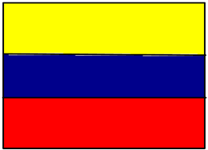
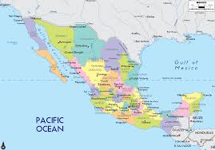
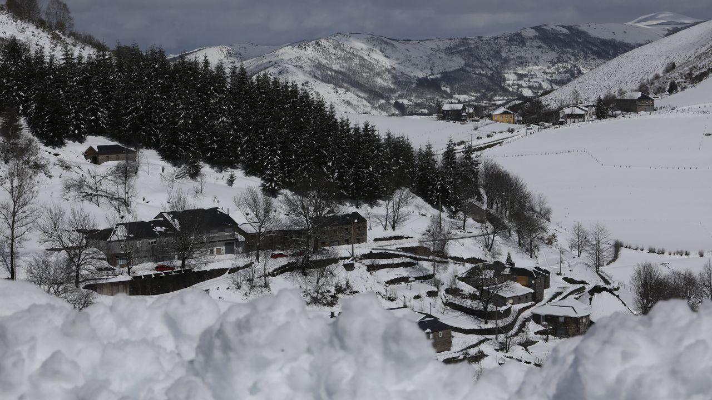
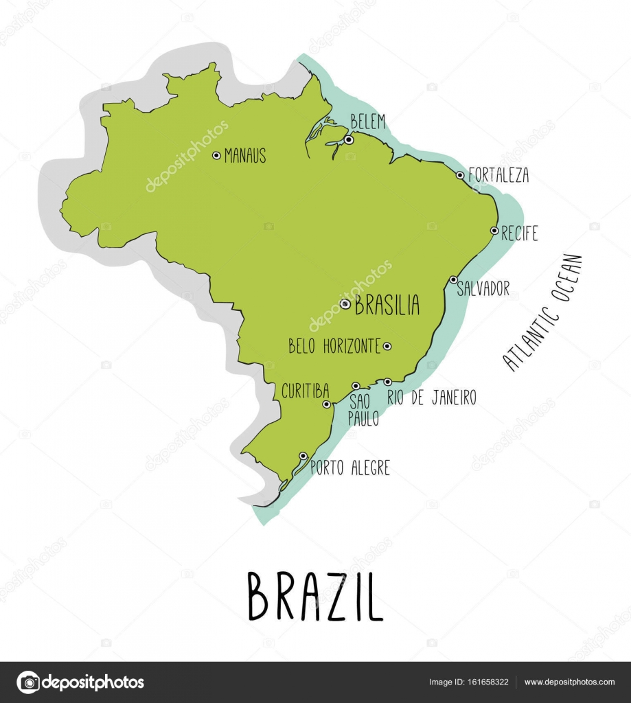

 TRANSILVANIA 
noticias de trsnsilvania 11/2/2016
11/02/2016 Transilvan o la belleza del espiritu. En el corazon de Rumania, mas alla dse las tinieblas de dracula, fluye la naturaleza salvaje y una bella red de templos de los siglos XIII al XVIII Acoge las ruinas de Truda, un asentamiento neolitico que pasa por ser lacuidad de Europa antigua (500AC) Sus habitantes siguen el ejemplo de Todoran : Nunca es tarde para defender tu diginidad, la fe es una cuestion que no se puede negociar,
11/02/2016 Entradas a cambio de sangre en un festival de musica en Transilvania Las cifras evidencian la escasez de donantes en Romania 17 de cada 1000 cuidadnos son donantes de sangre. El mito del conde Dracula vuelve a chupar la sangre en Transilvania, pero esta vez para una buena causa. Un festival de musica electronica ofrece entradas a cambio de donaciones para concienciar sobre la escasez de donantes es Romania.
 Poiana Brasov es una estacion de esqui y un importante centro turistico situado a doce Kilometros de Brasov, Rumania. Se encuentra en el macizo Potavaru (en los carpatos meridionales), a una elevacion de 1.030 metros sobre el nivel del mar, y esta rodeado por cuatro montanas: potavaru (1,799m), Piatra Craiului (2,238m), Becegi (2,505m) y continental, con una temperatura media anual de 5 grados (la temperatura media en julio es de 14,5 grados y en enero es de -5 grados) y la precipitacion excede de900 milimetros anualmente. El manto de nieve se mantiene cerca de 120 dias al ano. Fue fundado en 1895 y,, originariamente, fue un distrio de Brasov. Sin embargo, en 1906 fue declarado resort invernal. Desde entonces se han celebrado distintas pruebas deportivas relacionadas con deportes de invierno. Actualmente, la estacion es importante centro turistico internacional, pues cuenta con doce pistaa de esqui con diferentes grados de dificultad, hoteles de lujo, un funivular, piscinas cubiertas, saunas y varios restaurantes.
 los montes Carpatos son un sistema montanoso de Europa oriental que forma un gran arco de 1600 Km de longitud y unos 150 Km de anchura media, a lo largo de las fronteras de Austria, la Republica Checa, Eslovaquia, Polonia, Ucrania, Rumania, Serbia, y el norte de Hungria, lo que le convierte en la segunda cordillera mas larga de Euroipa tras los Alpes escandinavos, con 1700 Km . En los Carpatos se encuentran las mayores poblaciones europeos de oso pardo, lobo europeo, gamuzas y linces, con la mayor concentracion en Rumania, y mas de untercio de todas las especies de plantas de Europs. Los Carpatos y su piedemonte tambien concentra aguas termales y minerales. Rumania alberga un tercio del total europeo de estas aguas y es el segundo pais con mayor superficie de bosuqes virgenes del continente tras Rusia, con 250,000 hectareas, de las cuales la mayor parte se encuentra en los carpatos. Los Carpatos meridionales constituen la superficie sin fragmentar mas grande de Europa.
sibiu sibiu siubiu(hemamnstadt en aleman) es la mas importante de las ciudades fundadas durante el siglo xii po los llamados sajones de transilvania las otras son tambi&aeacute;n ciudades historicas de cluj, medias brasov,bistrita sabes y sighisoara, sibiu fue, con gran influencia comercinate que tejieron relaciones comerciales entre el baltico, el mediterrano y el mar negro. la riqueza de las familias comerciante permitio grandes edificios y fortificaciones, ligrando un explendor que aun se aprecia